Accelerate Reed-Solomon Codes on GPUs
Shuai YUAN
LSALab
Overview
- Introduction
- Background
- Accelerating Operations in Galois Field
- Accelerating Matrix Multiplication
- Reducing Data Transfer Overhead
- Experiment
Background
Why Fault-Tolerance?
In a RAID-like system, storage is distributed among several devices, the probability of one of these devices failing becomes significant:
If the MTTF (mean time to failure) of one device is $P$, then the MTTF of a system of $n$ devices is $\dfrac{P}{n}$.
Therefore in such systems, fault-tolerance must be taken into account.
Why Reed-Solomon Codes?
| 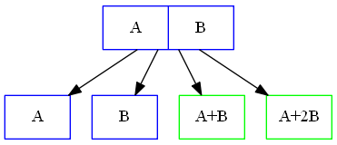 | 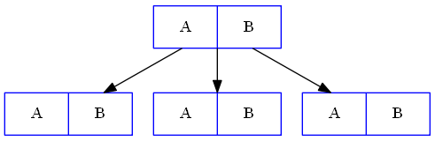 |
| Reed-Solomon Code (n=4, k=2) | Replication |
Save 50% space!
Reed-Solomon Code Overview
| 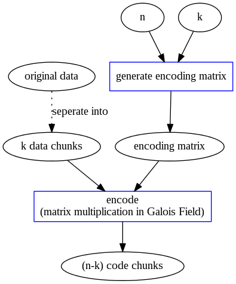 |

|
| Reed-Solomon Encoding | Reed-Solomon Decoding |
Reed-Solomon Coding Mechanism
Reed-Solomon Encoding Mechanism
Given file $F$: divide it into $k$ equal-size native chunks: $F = [F_{i}]_{i=1,2,\dots,k}$. Encode them into $(n-k)$ code chunks: $C = [C_{i}]_{i=1,2,\dots,n-k}$. Use Encoding Matrix $EM_{(n-k) \times k}$ to produce code chunks: $$ C^{T} = EM \times F^{T} $$ $C_{i}$ is the linear combination of $F_{1}, F_{2}, \dots, F_{k}$.
Reed-Solomon Encoding Mechanism
In our case, \begin{align} \begin{array}{rcl} F &=& \begin{pmatrix} A & B \end{pmatrix} \\ EM &=& \begin{pmatrix} 1 & 1 \\ 1 & 2 \\ \end{pmatrix} \\ %C &=& \begin{pmatrix} A & B & A+B & A+2B \end{pmatrix} C^{T} &=& \begin{pmatrix} 1 & 1 \\ 1 & 2 \\ \end{pmatrix} \times \begin{pmatrix} A \\ B \end{pmatrix} \\ &=& \begin{pmatrix} A+B \\ A+2B \end{pmatrix} \end{array} \end{align}
Reed-Solomon Encoding Mechanism
Let $P = [P_{i}]_{i=1,2,\dots,n} = [F_{1}, F_{2}, \dots, F_{k}, C_{1}, C_{2}, \dots, C_{n-k}]$ be the $n$ chunks in storage, $EM' = \begin{pmatrix} I \\ EM \end{pmatrix}$, Here $$ I = \begin{pmatrix} 1 & 0 & \ldots & 0 \\ 0 & 1 & \ldots & 0 \\ \vdots & \vdots & \ddots & \vdots \\ 0 & 0 & \ldots & 1 \end{pmatrix} $$ then \begin{align} \begin{array}{rcl} P^{T} &=& EM' \times F^{T} \\ &=& \begin{pmatrix} F^{T} \\ C^{T} \end{pmatrix} \end{array} \end{align}
Reed-Solomon Encoding Mechanism
In our case, \begin{align} \begin{array}{rcl} EM' &=& \begin{pmatrix} I \\ EM \end{pmatrix} = \begin{pmatrix} 1 & 0 \\ 0 & 1 \\ 1 & 1 \\ 1 & 2 \\ \end{pmatrix} \\ P^{T} &=& EM' \times F^{T} \\ &=& \begin{pmatrix} 1 & 0 \\ 0 & 1 \\ 1 & 1 \\ 1 & 2 \\ \end{pmatrix} \times \begin{pmatrix} A \\ B \end{pmatrix} \\ &=& \begin{pmatrix} A \\ B \\ A+B \\ A+2B \end{pmatrix} \end{array} \end{align}
Reed-Solomon Encoding Mechanism
$EM'$ is the key of MDS property!
equivalent expression of full rank:
- rank = $k$
- non-singular
- $\vdots$
Alternative view: Consider the linear space of $P = [P_{i}]_{i=1,2,\dots,n} = [F_{1}, F_{2}, \dots, F_{k}, C_{1}, C_{2}, \dots, C_{n-k}]$, its dimension is $k$, and any $k$ out of $n$ vectors form a basis of the linear space.
Reed-Solomon Encoding Mechanism
Reed-Solomon Codes uses Vandermonde matrix $V$ as $EM$ $$ V = \begin{bmatrix} 1 & 1 & 1 & \ldots & 1 \\ 1 & 2 & 3 & \ldots & k \\ 1^2 & 2^2 & 3^2 & \ldots & k^2 \\ \vdots & \vdots & \vdots & \ddots & \vdots \\ 1^{(n-k)} & 2^{(n-k)} & 3^{(n-k)} & \ldots & k^{(n-k)} \end{bmatrix} $$
Reed-Solomon Encoding Mechanism
$$ EM' = \begin{bmatrix} 1 & 0 & 0 & \ldots & 0 \\ 0 & 1 & 0 & \ldots & 0 \\ 0 & 0 & 1 & \ldots & 0 \\ \vdots & \vdots & \vdots & \ddots & \vdots \\ 0 & 0 & 0 & \ldots & 1 \\ 1 & 1 & 1 & \ldots & 1 \\ 1 & 2 & 3 & \ldots & k \\ 1^2 & 2^2 & 3^2 & \ldots & k^2 \\ \vdots & \vdots & \vdots & \ddots & \vdots \\ 1^{(n-k)} & 2^{(n-k)} & 3^{(n-k)} & \ldots & k^{(n-k)} \end{bmatrix} $$
Reed-Solomon Encoding Mechanism
Remark:
- All arithmetic operations in Galois Field GF($2^{w}$). Then every number is less than $2^{w}$.
- $EM'$ satisfies MDS property.
Reed-Solomon Decoding Mechanism
We randomly select $k$ out of $n$ fragments, say $X = [x_{1}, x_{2}, \cdots, x_{k}]^{T}$. Then we use the coefficients of each fragments $x_{i}$ to construct a $k \times k$ matrix $V'$. Original data can be regenerated by multiplying matrix $X$ with the inverse of matrix $V'$: $$ F = V'^{-1} X $$
Brief Introduction of Galois Field
Breif Introduction of Galois Field GF($p^w$)
Galois field GF($p^w$), where $p$ is a prime and $w$ is a positive integer, is a set of $p^w$ polynomials of degree at most $w - 1$.
- The field is closed under addition and multiplication, for which every element has an additive and multiplicative inverse (except for the 0 element which has no multiplicative inverse).
- there exists an element $\alpha$ in GF($p^w$), such that all the non-zero elements of GF($p^w$) can be written as $\alpha^i$ for some integer $i$. The element $\alpha$ is called a primitive element or generator of the GF($p^w$).
- Any primitive element $\alpha$ has the property of $\alpha^{2^w - 1} = 1$.
Breif Introduction of Galois Field GF($2^w$)
Among the Galois Fields, the binary extension fields GF($2^w$) are of particular interest in erasure codes due to the byte-based nature of memory in many computer architectures.
GF($2^w$) is constructed by finding a primitive polynomial $q(x)$ of degree $w$ over GF$(2)=\{ 0, 1 \}$, and then enumerating the polynomial elements with a generator.
Generation of GF($2^w$)
In GF($2^w$), the polynomial $x$ can be considered a generator.
Generation of GF($2^w$):
- start with the elements 0, 1, and $x$
- continue to enumerate the elements by multiplying the last element by $x$ and taking the result modulo $q(x)$ if it has a degree no less than $w$.
- This enumeration ends at $2^w$ elements – the last element multiplied by $x$ mod $q(x)$ equals 1.
Generation of GF($2^w$)
e.g. Generation of GF($2^2$): $w = 2$, and $q(x) = x^2 + x + 1$.
Initial set: $\{ 0, 1, x \}$
$x^2 \textrm{ mod } q(x) = x + 1$, insert into the set: $\{ 0, 1, x, 1+x \}$.
$(x+1)x \textrm{ mod } q(x) = 1$, end of enumeration.
Breif Introduction of Galois Field GF($2^w$)
Each polynomial elements of GF($2^w$) can be mapped into a binary word $b$ of size $w$ by setting the $i$th bit of $b$ to the coefficient of $x^i$ in the polynomial.
e.g. GF($2^2$)
| generated element | polynomial element | binary element $b$ | decimal representation of $b$ |
| 0 | 0 | 00 | 0 |
| $x^0$ | 1 | 01 | 1 |
| $x^1$ | $x$ | 10 | 2 |
| $x^2$ | $x+1$ | 11 | 3 |
For GF($2^8$), every element can be mapped into a byte.
Accelerate Operations in Galois Field
Accelerate Operations in Galois Field
- Addition/subtraction of two elements in GF($2^w$) in this field can be performed by inexpensive bitwise XOR of the elements.
- Multiplication of two elements is defined as the multiplication of two polynomials which represents the elements and modulo an irreducible generator polynomial.
Therefore, how to accelerate the time-consuming multiplication over GF($2^w$) will be our focus.
GPU Implementation: Loop-based or Table-based?
Loop-based Method
Overview of the Loop-based Method
To perform the multiplication of two binary numbers in GF($2^w$), the numbers should be converted to their polynomial elements, multiplied by the polynomials modulo $q(x)$, and then converted back to binary.
Russian peasant multiplication algorithm can be used to turn it into bitwise operations.
Russian Peasant Multiplication Algorithm
e.g. Russian peasant multiplication in normal field: \begin{align} 9 \times 12 &\leadsto (9/2) \times (12 \times 2) + 12 \\ &\leadsto (4/2) \times (24 \times 2) + 12 \\ &\leadsto (2/2) \times (48 \times 2) + 12 \\ &\leadsto (48 \times 2) + 12 \\ &\leadsto 108 \end{align}
Russian Peasant Multiplication Algorithm
e.g. Russian peasant multiplication in GF($2^8$): \begin{align} (x^3+1) \times (x^3+x^2) &\leadsto (x^2) \times (x(x^3+x^2)) + (x^3+x^2) \\ &\leadsto (x) \times (x(x^4+x^3)) + (x^3+x^2) \\ &\leadsto 1 \times (x(x^5+x^4)) + (x^3+x^2) \\ &\leadsto x^6+x^5+x^3+x^2 (\equiv 108) \\ \end{align}
Actually multiplication in GF($2^w$) is the same as that in normal field, except that we have to add necessary modulo operations so that the result is smaller than $2^w$.
Example Implementation of Russian Peasant Multiplication Algorithm
multiply two operands $a$ and $b$ in GF($2^8$):
uint8_t gf256_mul(uint8_t a, uint8_t b)
{
uint8_t result;
while(b)
{
// LSB bit of b is 1
if(b & 1)
{
// Emulate polynomial addition
result ^= a;
}
// Primitive polynomial of GF(2^8):
// x^8+x^4+x^3+x^2+1
// which is mapped into 0x1d
uint8_t prim_poly = 0x1d;
// Emulate polynomial modulo
a <<= 1;
// MSB bit of a is 1
if (a & 0x80)
{
// modulo by prim_poly
a ^= prim_poly;
}
b >>= 1;
}
return result;
}
costs at most eight iterations to complete → computation-bound
Table-based Methods
Full Multiplication Table Method
Pre-compute all the multiplication result in a table. Multiplication becomes one table-lookup operation.
example implementation to multiply $a$ and $b$ in GF($2^8$) using the full multiplication table:
uint8_t gf256_mul_table[256][256];
uint8_t gf256_mul(uint8_t a, uint8_t b)
{
return gf256_mul_table[a][b];
}
- Pros: least computation operations: only one table-lookup.
- Cons:
- large memory consumption: $O(2^w \times 2^w)$ for GF($2^w$).
- redundancies in the table: a waste of space
e.g. gf256_mul_table[a][b] = gf256_mul_table[b][a]
"Double Table"/"Left-Right Table" Method
Based on the following observation:
\begin{align} a(x) \times b(x) &= (a_{0} + a_{1}x + ... + a_{w-1}x^{w-1}) \times (b_{0} + b_{1}x + ... + b_{w-1}x^{w-1}) \\ &= (a_{0} + a_{1}x + ... + a_{w/2-1}x^{w/2-1}) \times (b_{0} + b_{1}x + ... + b_{w-1}x^{w-1}) \\ &+ (a_{w/2}x^{w/2} + ... + a_{w-1}x^{w-1}) \times (b_{0} + b_{1}x + ... + b_{w-1}x^{w-1}) \end{align}Note: add operations in Galois Field are equivalent to XOR.
Split the full multiplication table into two smaller tables containing the product for the MSB part and the LSB one.
"Double Table"/"Left-Right Table" Method
example implementation to multiply $a$ and $b$ in GF($2^8$) using the double table method:
uint8_t gf256_left_table[16][256];
uint8_t gf256_right_table[16][256];
uint8_t gf256_mul(uint8_t a, uint8_t b)
{
return gf256_left_table[(a >> 4) & 0x0f][b] ^ gf256_left_table[a & 0x0f][b];
}
- Space complexity: $O(2^{3w/2+1})$ for GF($2^w$).
- Computation complexity: 2 table-lookup, 2 AND, 1 XOR, and 1 SHIFT operations.
Log&Exp Table Method
Basis: every non-zero element can be represented as a power to a primitive element $\alpha$.
Assume that $a = \alpha^i$ and $b = \alpha^j$ are two non-zero elements in GF($2^w$). Then their product $ab = \alpha^{i + j}$.
Since for any primitive element $\alpha$, the property $\alpha^{2^w - 1} = 1$ holds.
Thus, we have:
\begin{align}
ab &= \alpha^{(i + j) \% (2^w - 1)} \\
&= \alpha^{(log_{\alpha}a + log_{\alpha}b) \% (2^w - 1)}
\end{align}
Log&Exp Table Method
Construct two tables:
- exponential table: maps from a binary element $b$ to power $j$ such that $\alpha^j$ is equivalent to $b$.
- logarithm table: maps from a power $j$ to its binary element $b$ such that $\alpha^j$ is equivalent to $b$.
Multiplication in GF($2^w$) consists of:
- looking each binary number in the logarithm table for its logarithm
- adding the logarithms modulo $2^w-1$
- looking up the exponential table to convert the result back to a binary number.
Log&Exp Table Method
example implementation to multiply $a$ and $b$ in GF($2^8$) using the log&exp table method:
uint8_t gf256_log_table[256];
uint8_t gf256_exp_table[255];
// width of GF(2^8)
const int width = 8;
// number of elements in GF(2^8)
const int NW = 1 << width;
uint8_t gf256_mul(uint8_t a, uint8_t b)
{
int result;
if (a == 0 || b == 0)
{
return 0;
}
result = (gf256_log_table[a]
+ gf256_log_table[b]) % (NW-1);
return gf256_exp_table[result];
}
- Space complexity: $O( 2^{w+1} )$ for GF($2^w$).
- Computation complexity: 3 table-lookup, 1 MOD, 1 ADD, and 2 branch operations.
Choice for GPU Implementation
Criteria: to avoid high latency of off-chip memory access, the tables are expected to fit into the cache or on-chip memory (the so-called "shared memory" in GPU).
memory space of tables for multiplication over GF($2^8$):
- Full table: 64 KB → exceed cache limit
- "double tables": 8 KB → low GPU occupancy → performance degradation occupancy: the ratio of the number of active warps per multiprocessor to the maximum number of possible active warps
- log&exp tables: 512 Bytes
→ used in our GPU implementation
Further Improvement of the Log&exp Table-based Method
Log&Exp Table Method - Improvement I
Replace slow MOD operation with more efficient operations.
Observation: Let $Q = 2^w$, then $log(a), log(b) \in [0,Q-1]$. Therefore: $(log(a)+log(b)) \in [0, 2Q -2]$
\begin{equation*} (log(a) + log(b)) \% Q = \left\{ \begin{array}{ll} 0 & \textrm{if } (log(a) + log(b)) = Q \\ (log(a) + log(b)) \& Q + (log(a) + log(b)) >> w & \textrm{otherwises} \end{array} \right. \end{equation*}
We can extend the exponential table to make sure $exp[Q] = 0$. After augmenting the exponential table, the modular operation can be simply the following equation: \begin{equation*} (log(a) + log(b)) \% Q = (log(a) + log(b)) \& Q + (log(a) + log(b)) >> w \end{equation*}
Log&Exp Table Method - Improvement I
example implementation to multiply $a$ and $b$ in GF($2^8$) using the Improvement I approach:
uint8_t gf256_log_table[256];
uint8_t gf256_exp_table[256];
// width of GF(2^8)
const int width = 8;
// number of elements in GF(2^8)
const int NW = 1 << width;
uint8_t gf256_mul(uint8_t a, uint8_t b)
{
int result;
if (a == 0 || b == 0)
{
return 0;
}
result = (gf256_log_table[a] + gf256_log_table[b]) & (NW-1)
+ (gf256_log_table[a] + gf256_log_table[b]) >> width;
return gf256_exp_table[result];
}
Log&Exp Table Method - Improvement II
Remove the slow modular operation by augmenting the exponential table (adopted by Jerasure as the LOGS policy).
insert $Q - 2$ more elements in the exponential table apart from $exp[Q] = 0$: $exp[i] = exp[i \% Q] (i \in [Q, 2Q-2])$
example implementation to multiply $a$ and $b$ in GF($2^8$) using the Improvement II approach:
uint8_t gf256_log_table[256];
uint8_t gf256_exp_table[509];
uint8_t gf256_mul(uint8_t a, uint8_t b)
{
int result;
if (a == 0 || b == 0)
{
return 0;
}
result = (gf256_log_table[a] + gf256_log_table[b]);
return gf256_exp_table[result];
}
Log&Exp Table Method - Improvement III
Further eliminates the conditional branch by augmenting both the exponential table and the logarithm tables.
Let $Q = 2^w$, $\alpha$ be a primitive element, then
\begin{equation*}
exp[i] = \left\{
\begin{array}{ll}
\alpha^{i} & \textrm{if } i \in [0, Q-1] \\
exp[i \% Q] & \textrm{if } i \in [Q, 2Q-1] \\
0 & \textrm{if } i \in [2Q, 4Q]
\end{array} \right.
\end{equation*}
\begin{equation*}
log[x] = \left\{
\begin{array}{ll}
2Q & \textrm{if } x = 0 \\
i & \textrm{if } x \in [1, Q], x = \alpha^{i}
\end{array} \right.
\end{equation*}
Log&Exp Table Method - Improvement III
example implementation to multiply $a$ and $b$ in GF($2^8$) using the Improvement III approach:
uint16_t gf256_log_table[256];
uint8_t gf256_exp_table[1021];
uint8_t gf256_mul(uint8_t a, uint8_t b)
{
int result;
result = (gf256_log_table[a] + gf256_log_table[b]);
return gf256_exp_table[result];
}
Further Improvement of the Log&exp Table-based Method
In GPU implementation, where to store the log and exp tables and how to initialize them will affect the performance.
Appropriate GPU memory:
- constant memory: off-chip memory whose accesses are usually cached in the constant cache
- shared memory: on-chip memory which has the smallest access latency except the register file
Further Improvement of the Log&exp Table-based Method
What we have implemented:
- Store two tables in the constant memory and initialize them at compile time.
- Store two tables in the shared memory and run-time initialize them serially at the beginning of each kernel function.
- Store two tables in the off-chip memory and then load into the shared memory parallely at the beginning of each kernel function.
Accelerate Encoding/Decoding (Matrix Multiplication over Galois Field)
Naive Implementation
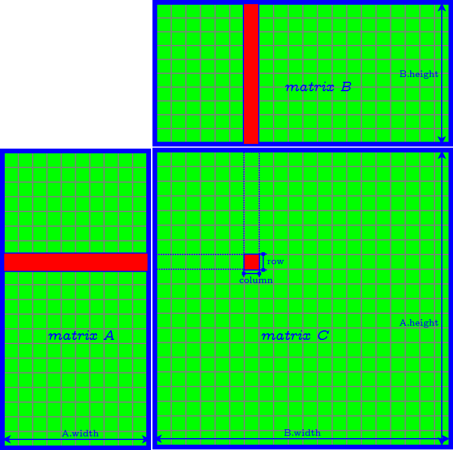Tiling Algorithm
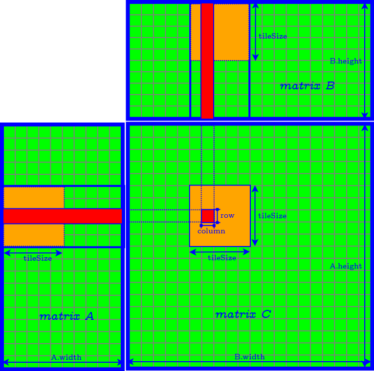Further Improvement of Tiling Algorithm
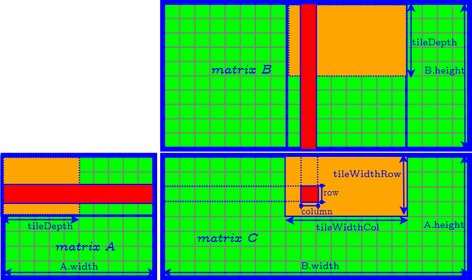Accelerate Decoding Matrix Generation (Matrix Inversion)
After knowing which $k$ fragments are used for decoding, we know the corresponding rows of coefficients in the encoding matrix $V$ . These rows form the $k \times k$ matrix $V′$ , and we need to compute its inverse.
We use Gauss elimination to compute inverse matrix: augment the square matrix $V′$ with the identity matrix $I$ of the same dimensions to obtain $[V′ | I]$ and then apply matrix operations to transfer $[V′ | I]$ into its reduced row echelon form: $V′^{−1} [V′ | I] = [I | V′^{−1}]$.
Accelerate Decoding Matrix Generation (Matrix Inversion)
Gauss elimination contains the following steps:
- Check whether the diagonal item in the current row of $V$ is nonzero. If it is zero, find a nonzero item and switch the two columns. The same column switching should also apply to $I$. Then the diagonal item in the current row of $V′$ is our pivot.
- Normalize the current row by the pivot.
- Eliminate other rows so that the reverse column of the current row becomes reduced echelon form.
Step 2 and Step 3 are suitable to be parallelized, but since we have to set barriers between steps, Gauss elimination is still not a fully-paralleled algorithm. CPU-GPU corporation may be an appropriate solution.
Reduce Data Transfer Overhead
Reduce Data Transfer Overhead
- Using Pinned Host Memory
- Using CUDA Streams
Using Pinned Host Memory
By default, the host data is allocated as pageable
→ can be swapped out to disk and change the mapping from virtual address to physical address
→ unavailable for the device to access directly.
Pageable Host Memory
simplified procedure of H2D data transfer using pageable memory
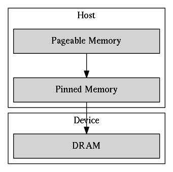- extra works for the host: allocation and release of staging buffers and the memory copy from pageable memory to staging buffers.
- the PCI-E bus connecting the host and the device is not fully utilized.
Pinned Host Memory
pinned memory is page-locked: its physical address is marked as ineligible for eviction and cannot be changed by the operating system.
simplified procedure of H2D data transfer using pageable memory
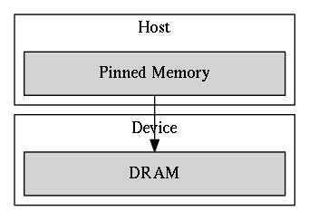- Pros: The DMA can fetch pinned memory without the involvement of the CPU and achieve higher throughput than accessing pageable memory.
- Cons: Pinned memory is scarce and costs more time for allocation and deallocation.
Using CUDA Streams
CUDA streams are used for further overlapping data transfers with computation.
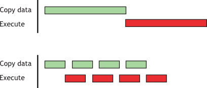Sequential vs. Concurrent copy and execute
Experiment
Experiment Setup
Experiment Setup
- CentOS-6 with 2.6.32 Linux kernel.
- Intel Xeon Processor E5-2670 v2 x 2
-
- 10 cores
- 2.5 GHz
- NVIDIA Tesla K20X GPU x 2
-
- 2688 CUDA cores
- peak performance: 1.31 Tflops (double precision floating point calculation) and 3.95 Tflops (single precision floating point)
- maximum size of GPU GDDR5 memory: 6 GB
- theoretical memory bandwidth 243 GB/s
- two copy engines → supports concurrent data copy and kernel execution
- maximum bidirectional bandwidth of the PCI-Express bus: 8 GB/s
Experiment Setup
- Input files are randomly generated.
- Most of our experimental results reflect the average of 100 runs.
- Due to the similarity of the performance result of encoding and that of decoding in most experiments, the latter one is omitted.
Evaluation Metrics
- Execution time for a single kernel or memory transaction
- Effective bandwidth
- Total GPU encoding time
- Total GPU decoding time
Evaluation Metrics
Execution time for a single kernel or memory transaction
measured by recording two CUDA events at the beginning and the end of the kernel and calculating their elapsed time.
Evaluation Metrics
Effective bandwidth
defined as the ratio of the number of bytes read or written by the kernel and the execution time of the kernel.
Assume that $CS$ is the chunk size, and $t$ is the kernel execution time, then:
- the effective bandwidth of the encoding kernel is: $CS \cdot n / t$.
- the effective bandwidth of the decoding kernel is: $CS \cdot 2k / t$.
Evaluation Metrics
Total GPU encoding time
including the execution time of the following processes:- Copy data chunks from CPU to GPU
- Generating encoding matrix
- Copy encoding matrix from GPU to CPU
- Encoding file
- Copy code chunks from GPU to CPU
Evaluation Metrics
Total GPU decoding time
- Copy code chunks from CPU to GPU
- Copy decoding matrix from CPU to GPU
- Decoding file
- Copy data chunks from GPU to CPU
Overall Performance Evaluation
We evaluate the overall performance by encoding a 1600 MB file with $k = 4, n = 6$.
Overall Performance Evaluation
Step-by-step Improvement
Overall Performance Evaluation
GPU vs. CPU
- optimized CPU implementation (Jerasure compiled by clang with the -O3 compiler optimization flag): 4309.08 ms.
- optimized GPU implementation: 292.977 ms (14.71x speedup).
Accelerating Operations in Galois Field
GPU Implementation: Loop-based or Table-based?

Further Improvement of the Log&exp Table-based Method
encoding a 1GB file with $k = 4$ and $n = 6$.

Accelerating Matrix Multiplication over Galois Field
use the following ten testcases:
- $k = 4$, $n = 6$, chunk size = 256 MB
- $k = 32$, $n = 64$, chunk size = 16 MB
- $k = 4$, $n = 132$, chunk size = 3968 Bytes
- $k = 8$, $n = 10$, chunk size = 64 MB
- $k = 16$, $n = 18$, chunk size = 16 MB
- $k = 128$, $n = 130$, chunk size = 2 KB
- $k = 32$, $n = 34$, chunk size = 8 MB
- $k = 2$, $n = 4$, chunk size = 4 MB
- $k = 2$, $n = 4$, chunk size = 1 KB
- $k = 16$, $n = 20$, chunk size = 16 MB
Accelerating Matrix Multiplication over Galois Field

Reducing Communication Overhead
Using Pinned Host Memory
- BandwidthTest from the CUDA official SDK samples:
| H2D bandwidth (MB/s) | D2H bandwidth (MB/s) | |
| pageable host memory | 1440.6 | 2339.7 |
| pinned host memory | 5888.6 | 6394.5 |
Using Pinned Host Memory
- Real case for Reed-Solomon Codes: encode a 1000 MB file with $k = 4, n = 6$.

Using CUDA Streams
encoding under $k = 4, n = 6$ settings.
The input file size is scaled from 1000 MB to 2000 MB, and the CUDA stream number is increased from one to four.
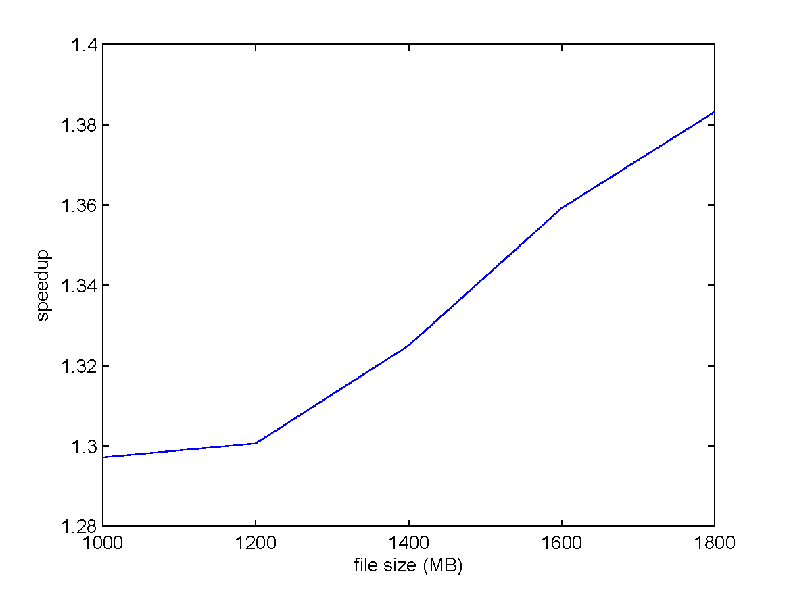Using CUDA Streams
encoding a 2000 MB file under $k = 4, n = 6$ settings.
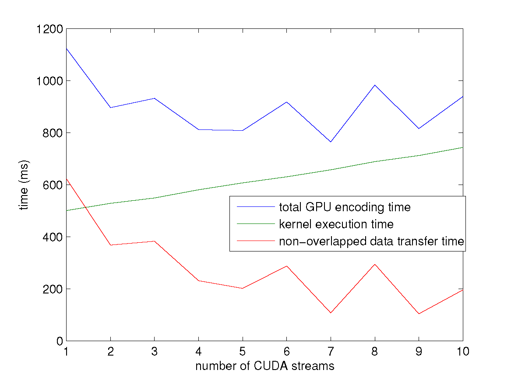